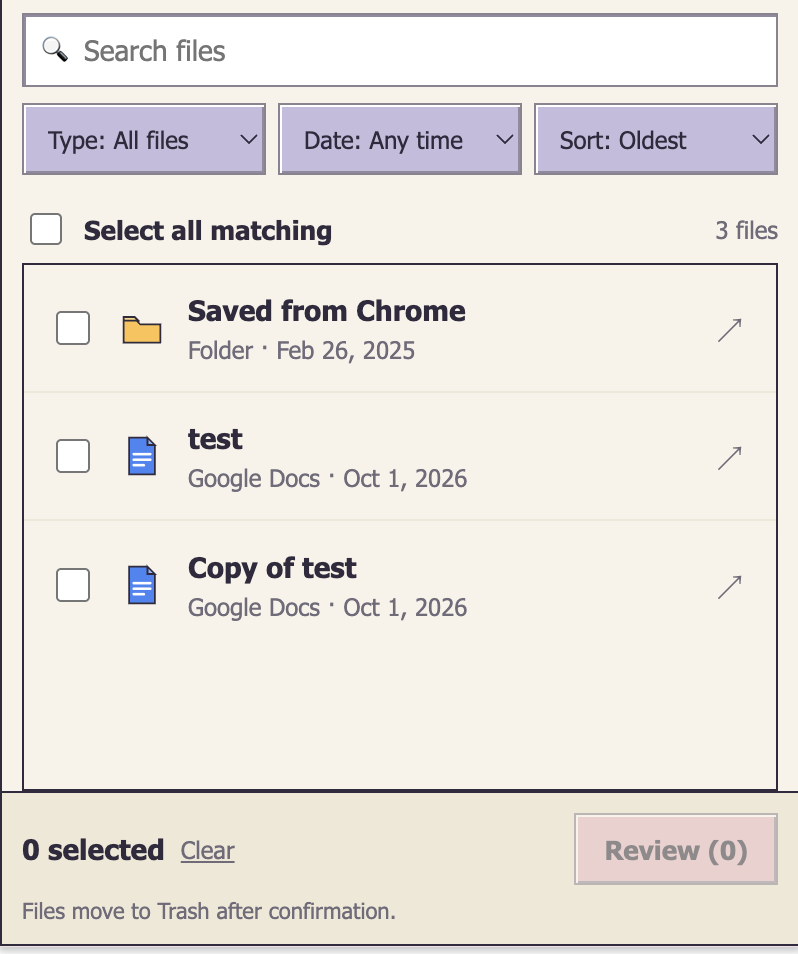

Start with your Drive.
Connect your Google account to browse files and folders you own. See names, file types, modification dates, and sizes when available.
Your Drive, a little lighter
Meet GoogleCleaner. A focused Chrome extension to find files in your Google Drive, review what you’ve selected, and move chosen items to Trash.
Review first. Confirm before anything moves.

From discovery to a considered cleanup
Four simple steps.
You decide what stays.
Connect your Google account to browse files and folders you own. See names, file types, modification dates, and sizes when available.
Search by filename, filter by type or modification date, and sort results to find the items you want to review.
Selections stay selected when filters change. Review the complete set before confirming, including items hidden by your current filters.
Confirm to move selected items to Trash. Moving a folder includes its contents. GoogleCleaner does not permanently delete files or empty Trash.
Clear about what happens next
Confirmed cleanup runs in the background. Progress and results are stored locally on your device, with results available when you reopen the extension.
GoogleCleaner requests Google Drive access to list existing items and their metadata, identify the signed-in account, and move selected items to Trash. Document contents are not downloaded or read.
Read the full Privacy PolicyA clearer starting point